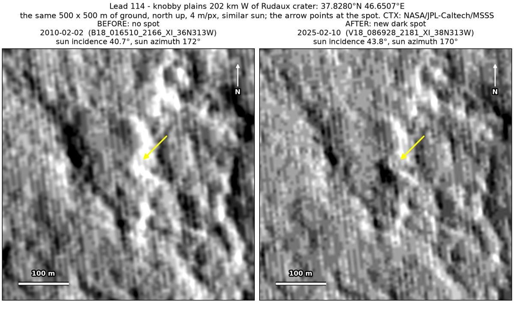
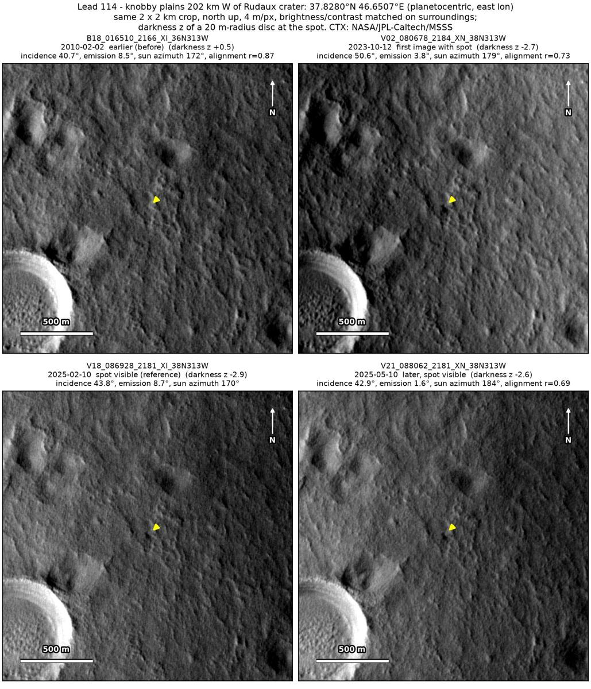
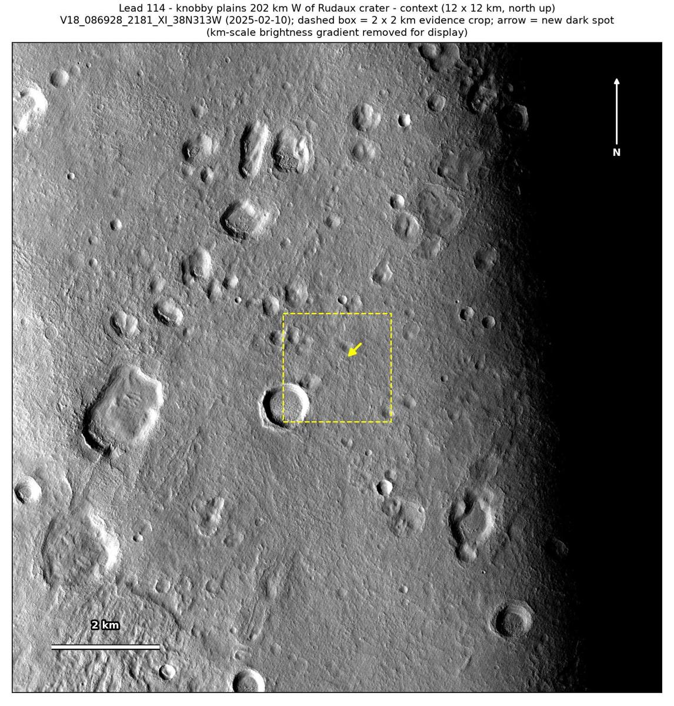

Professor of Mathematics
Paata Ivanisvili
Department of Mathematics, University of California, Irvine

← Possible new impact sites on Mars
Candidate 114: Knobby plains 202 km west of Rudaux crater
Promising · roughly 60%

What changed. A compact dark spot about 35 m across appeared on the side of a bright knob, on knobby plains in northern Arabia Terra, between February 2010 and October 2023 and is still there in May 2025, in three CTX images from three orbits.
Why it may be a new impact. The only earlier image, of February 2010, taken under almost the same sun and in the same season as the February 2025 image, shows the side of the knob bright there, while a dark feature 110 m away shows in it, so a spot this dark would have shown. A compact dark spot that stays in the same place in three images from three orbits fits the blast zone of a small new crater.
- Location
- 37.828° N, 46.651° E
- Absent
- 2 February 2010
- Present
- 12 October 2023, 10 February 2025 and 10 May 2025
- Size
- Compact dark spot about 35 m across (36 × 46 m in the February 2025 image), on the side of a bright knob
- Confidence
- Promising candidate; roughly 60% that it is a new impact.
- Caveat
- The spot is faint, no darker than the shadows of the knobs nearby, and only one earlier image covers the site. The aligned before-and-after difference singles it out only in fine detail, as other places change as much at a coarser scale, and the February 2025 image is heavily compressed, although the October 2023 and May 2025 images show the spot in the same place. It lies outside every footprint of the high-resolution HiRISE camera; the nearest ends 7.9 km away. Like every candidate here, it is unconfirmed: see the caveat.

